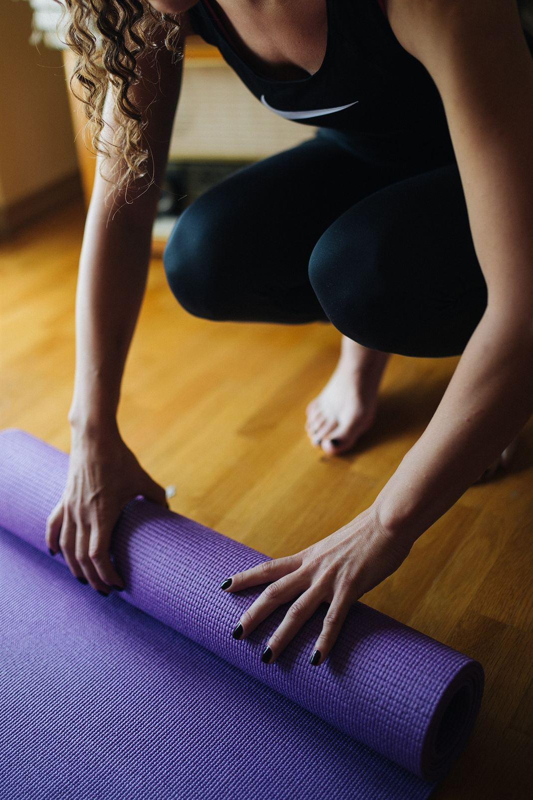
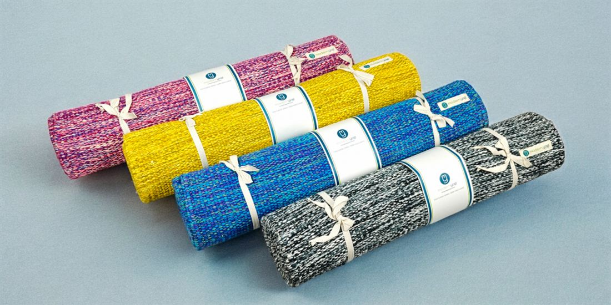
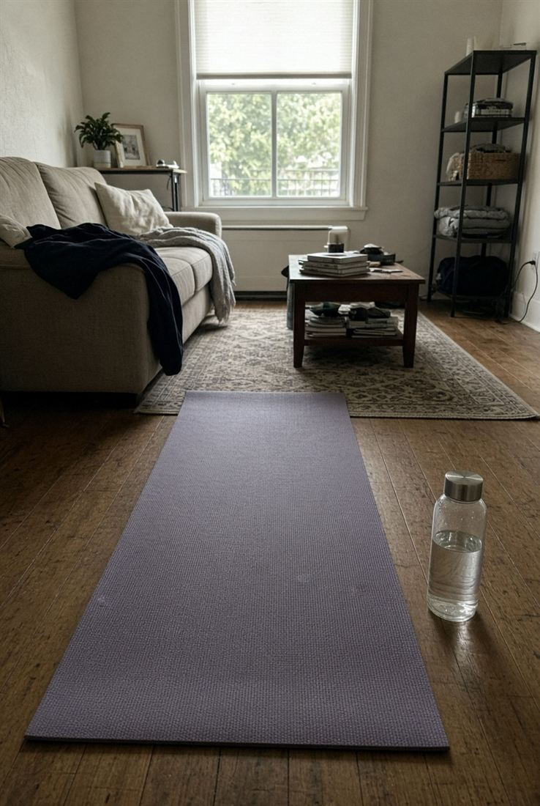
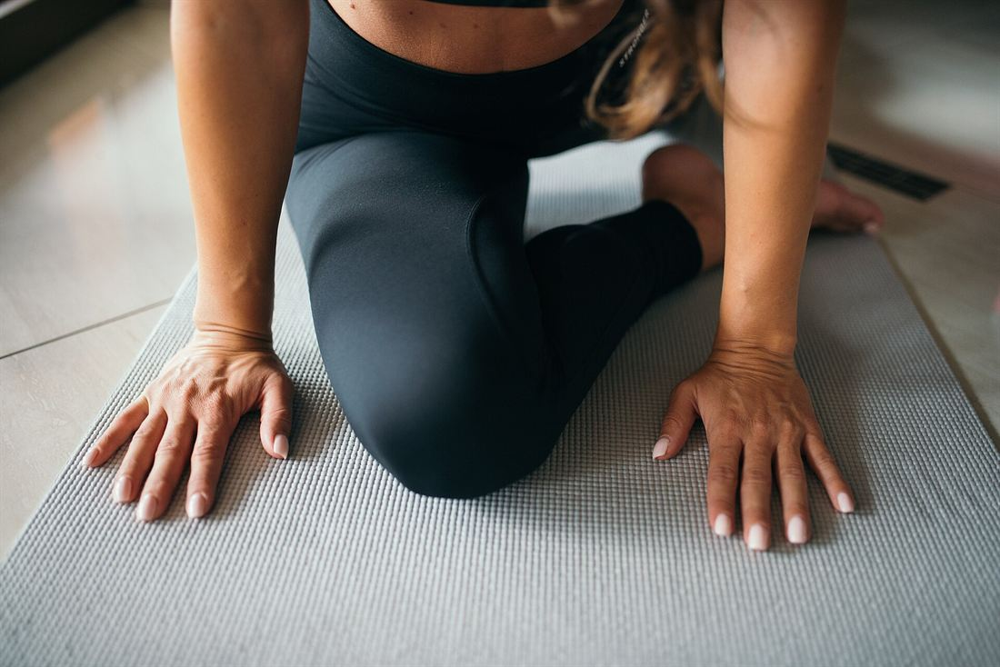
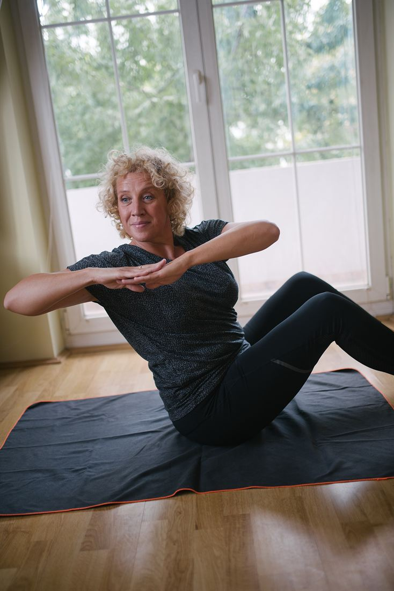

The beginner’s guide
Your first month of yoga, mapped out
You don’t need to be flexible, sporty or spiritual to start yoga. You need a little floor space, some curiosity and a plan. This guide gives you all three, from choosing a mat to a 20-minute sequence you can practice tonight.

What yoga is, and what it isn’t
Modern yoga classes blend physical postures (asana), breathing techniques (pranayama) and some form of relaxation or meditation. The aim isn’t to twist into a pretzel. It is to move with awareness, breathe well and leave the mat feeling better than when you arrived.
Yoga is not a competition, either with the person on the next mat or with the photos you see online. Two people can practice the same pose in very different-looking ways and both be doing it well. Bodies differ in proportions, joint structure and history; a good practice respects that.
Talk to your doctor first if you are pregnant, have recently had surgery or an injury, or manage a heart, blood-pressure, bone, joint or other health condition. Yoga can often be adapted, but your doctor knows your situation. See our health disclaimer.
Equipment
What you actually need
The only essential is a non-slip surface. Everything else makes poses easier or more comfortable, and you probably already own a substitute.
| Item | Why it helps | Household swap |
|---|---|---|
| Mat | Grip and cushioning; about 4–6 mm thick suits most people | A rug on a non-slip floor |
| Two blocks | Brings the floor closer in standing poses and folds | Thick hardback books |
| Strap | Extends your reach in stretches | A belt, scarf or towel |
| Blanket | Lifts the hips when sitting; pads the knees | A firm folded towel |
| Bolster | Supports restful and restorative poses | Two firm pillows |


At home
Setting up your practice space
- Room to move: enough space to lie down with your arms overhead and to step your feet wide without touching furniture.
- A firm floor: hard floors are best; on carpet, choose a thinner mat for stability.
- A wall nearby: invaluable for balance poses and for checking alignment.
- Comfortable temperature: warm enough to relax in Savasana. Keep a blanket close.
- Fewer distractions: put your phone on do-not-disturb, and let others know you’ll be busy for 20 minutes.
- Clothes: anything stretchy that stays put when you fold forward. Practice barefoot for grip.
Practice tonight
A 20-minute starter sequence
Twelve foundational poses in a gentle order, from waking up the spine to resting. Tap any pose to read full instructions in the library.
How to use it: breathe through your nose, move slowly between poses, and use the easier variation whenever you’re unsure. Skip anything that causes pain.

- Easy Seat with slow breathingArrive, lengthen the spine, breathe in for four and out for six.2 min
- Cat–CowMove with the breath to warm up the whole spine.1 min
- Child’s PoseSink the hips back and breathe into the back body.1 min
- Downward-Facing DogKnees bent, long spine; pedal the heels gently.1 min
- Standing Forward FoldBend the knees generously and let the head hang.1 min
- Mountain PoseRoll up slowly and find your feet.1 min
- Warrior IIFive breaths each side.2 min
- Triangle PoseHand on the shin or a block; five breaths each side.2 min
- Tree PoseFoot on the ankle or calf, near a wall.2 min
- Bridge PoseLift and lower three times, then hold.2 min
- Gentle seated twistLengthen first, then turn; both sides.1 min
- Corpse PoseLie still and let everything soften.4 min
Build the habit
A four-week plan
Small, steady steps. Practice on non-consecutive days at first, and repeat a week if you need more time.
| Week | Sessions | Length | Focus | Try adding |
|---|---|---|---|---|
| Week 1 | 2–3 | 15–20 min | Learn the starter sequence; breathe through the nose | A few minutes of slow breathing each morning |
| Week 2 | 3 | 20–25 min | Hold standing poses a little longer; notice alignment | Chair Pose and Warrior I |
| Week 3 | 3 | 25–30 min | Link a few poses with the breath; work on balance | Plank, Cobra and Side Angle |
| Week 4 | 3–4 | 30 min | Practice the full sequence with confidence; try a class | A beginner Hatha or Vinyasa class, or a breathing practice |
Avoid these
Six common beginner mistakes
Holding the breath
Effort often makes us clench and hold our breath. Keep it moving; if you can’t, the pose is too intense right now.
Locking the joints
Hyperextended knees and elbows put load on joints rather than muscles. Keep a micro-bend.
Chasing depth
A long spine with bent knees beats a rounded back with straight legs. Depth comes later, if at all.
Skipping the warm-up
Cold muscles resist. A few minutes of Cat–Cow and gentle movement makes everything safer.
Comparing yourself
Other people’s bodies and histories are different from yours. The only useful comparison is with yourself last month.
Skipping Savasana
The final rest is when the practice settles in. Give it at least three to five minutes.
Going to your first class
- Arrive 10–15 minutes early to sign in, find a spot and tell the teacher you’re new.
- Mention injuries or conditions privately to the teacher before class starts.
- Leave shoes and phone outside the practice room or silenced in your bag.
- Take the easier option whenever it’s offered. Teachers love students who listen to their bodies.
- Rest whenever you need to in Child’s Pose. You never need permission.
- Stay for Savasana. Leaving early disturbs others at the quietest moment of class.
- Hands-on adjustments are optional. You can always say no, before or during class.
Signs you’re ready to progress
- You can hold the starter-sequence poses for five steady breaths without strain.
- You recognize the names of the common poses and can enter them without watching.
- Your breath stays smooth during standing poses.
- You can balance in Tree Pose for a few breaths away from the wall.
From here, explore new families in the pose library, try a different style of class, or deepen your practice with breathwork and meditation.

Learn the foundations with a teacher
A Professional session ($49, 60 minutes) is a friendly, private way to check your alignment and build confidence from day one.